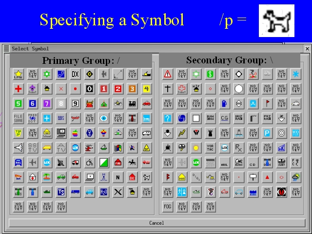

Notes:
The symbol for a station displayed by APRS mapping software is encoded into the APRS packet using a pair of characters (see the APRS protocol documentation for details on this encoding). One character is used to specify a group (or page) of symbols, the primary group with a “/” and the secondary group with a “\”. The other character specifies a particular symbol within the group. /p is the symbol for a rover station, usually displayed as a dog icon. \p, the corresponding symbol in the second group, is a rain showers symbol.